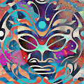 Everything Is Energy by CHROMAKANE “Everything Is Energy”是 Chromakane 的第一个将实体艺术和数字艺术联系起来的系列，将独特的手绘街头服饰和限量版艺术版画与独家艺术 NFT 收藏联
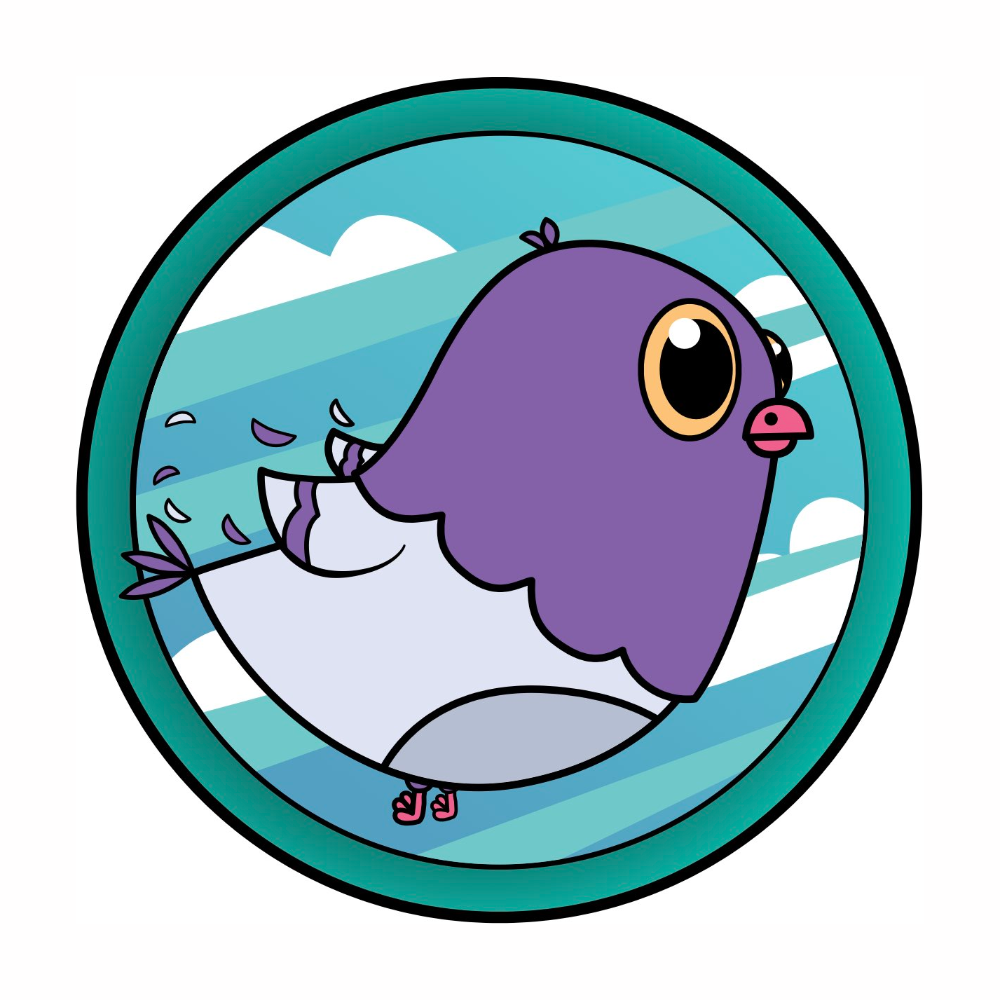 EverythingsCoo 一切都在核爆。但它会没事的。鸽子有韧性。一切都很好。 EverythingsCoo NFT 在过去 7 天内售出 782 次。EverythingsCoo 的总销售额为 3.48 万美元。一个 EverythingsCoo NFT 的平
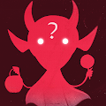 Evil Dorkis 邪恶的 Dorkis 是小兵、怪人和潜伏者，用钢笔和彩色铅笔在纸上创造了老式的方式，扫描和编辑以制作 4724 个邪恶的克隆。每个 Evil Dorkis 在原始收藏中都有一个特征匹配的
Evil Genius Science Club! Evil Genius Science Club 是一个 NFT 集合，由 10,000 个算法生成的疯狂科学家角色组成，其中包含由漫画家Jordan Lyric策划的手绘资产。每一个都具有完全独特的特征组
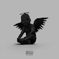 EVOL Content EVOL - 她属于区块链。元界最喜欢的反英雄的第一次音频泄漏。 EVOL Content NFT 在过去 7 天内售出 1 次。EVOL Content 的总销售额为 21.41 美元。一份 EVOL Content NFT 的平均价格为 21.4 美元
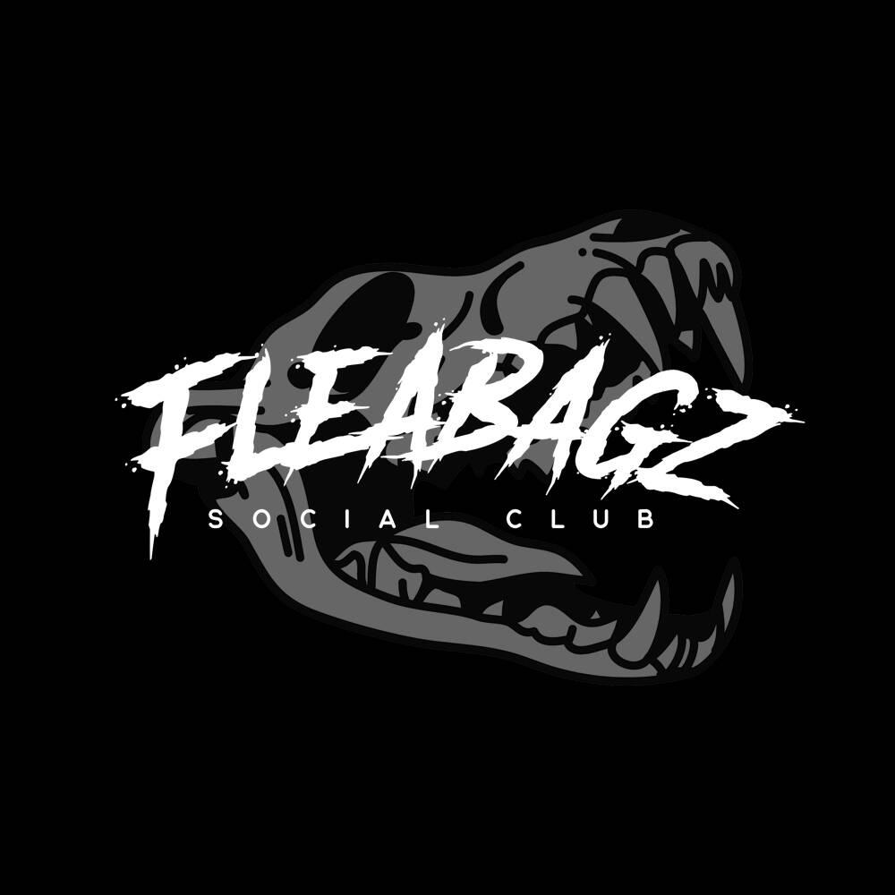 Fleabagz 跳蚤社交俱乐部 10,000 Fleabagz 试图得到那块骨头！5+ Fleaz 在第 2 阶段让您获得 WL 的骨头 以太坊区块链上有 10,000 个 Fleabagz 试图寻找 Bone。 不仅仅是一个社交俱乐部，而是一个
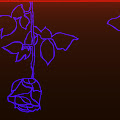 FLEE_BLOOD ▶ 什么是 FLEE_BLOOD？ FLEE_BLOOD 是一个 NFT（不可替代令牌）集合。存储在区块链上的数字艺术品集合。 ▶ 有多少 FLEE_BLOOD 代币？ 总共有 140 个 FLEE_BLOOD NFT。目前 44
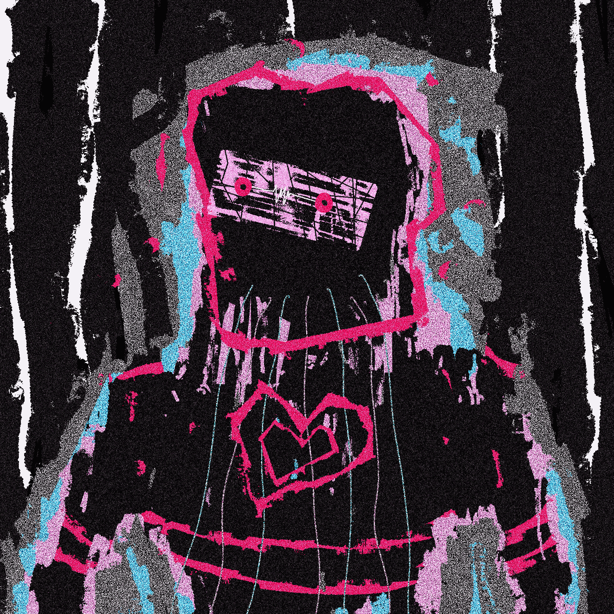 Flepergebet 1/1s 这是 Flepergebet 的官方收藏。 成为 Flepergebet 宇宙的一部分。该系列将有版本，1/1s。 将有两个实用代币。（Degens 之书）（空投、抽奖、实用代币持有者专有的私人
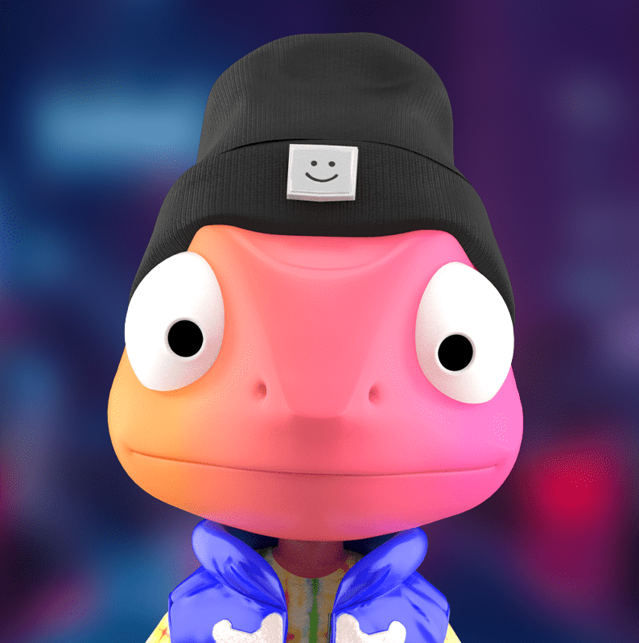 FLICKYGANG BY FLICKPLAY 有3种不同血统 Flicky 的：常见的、稀有的、史诗般的。每个血统都是由 Flicky 的特征组合定义的，这些特征是基于一个点系统建立的。 2,222个独特的 Flick
Flinch NFT Franchise 我们的使命是彻底改变电影。如何？用拥有电影特许经营权的 NFT 社区取代电影制片厂。Flinch NFT 是以太坊区块链上 1,1111 个创世通行证和 5555 个字符 NFT 的集合。
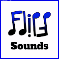 Flipp Sounds - Custom Music NFTs Flipp Sounds 是为购买项目通行证的用户设计的 255 件手工制作的音乐作品的集合。通过在前所未有的水平上进行定制，成为 NFT 市场全新体验的一部分。该项目由专业音乐
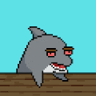 Flipper-Flipper 当突然被扔进一个加密货币的世界时，他在大海中游泳，一点也不在乎。他很快意识到自己有问题。让我们跟随 Flipper 尝试穿越元宇宙。 ▶ 什么是 Flipper-
FlipperAi FlipperAi 是一个正在进行的 NFT 集合，旨在纪念曾经繁华的 Friendly Waffles Facebook 群组。 以 ERC-1155 代币的形式诞生在以太坊区块链上，每一个独特的艺术系列都是由海豚和人工智能之间的各
Floadmaps 欢迎来到 Floadmap，一个与众不同的路线图 - NFT 集合！ Floadmap NFT 集合被空投给 Flipmap 持有者。Floadmap 有 12 个阶段，每个阶段都在单独的 Floadmap 版本中描述
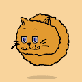 Floating Cats 5,888 只猫漂浮在以太坊区块链上。☁️🐱 Floating Cats 是一个位于日本名古屋的团队🇯🇵，团队成员遍布全球。我们爱猫，相信是猫的存在给了我们前进的动力。我们的最
Floki Inu - Diamond Hands - Bronze Tier Genesis Floki NFT 系列是 Floki 团队为您带来的第一个官方 NFT 系列。 他们被授予社区作为礼物，以奖励他们的钻石手。这个创世纪系列由三层组成：钻石、银和青铜。这些层级
Floki Inu - Diamond Hands - Diamond Tier Genesis Floki NFT 系列是 Floki 团队为您带来的第一个官方 NFT 系列。 他们被授予社区作为礼物，以奖励他们的钻石手。这个创世纪系列由三层组成：钻石、银和青铜。这些层级
Floki Inu - Diamond Hands - Silver Tier Genesis Floki NFT 系列是 Floki 团队为您带来的第一个官方 NFT 系列。 他们被授予社区作为礼物，以奖励他们的钻石手。这个创世纪系列由三层组成：钻石、银和青铜。这些层级
Flokimooni NFT - Official Flokimooni 以 Elon Musk 的 Shiba Inu 命名。Flokimooni 由 Shiba Inu 社区的粉丝和成员出生，像一场运动一样传播开来。创建一个具有加密领域最时尚功能的完全有吸引力的生
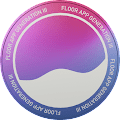 Floor App Gen 3 使用限量版第三代令牌加入令牌锁定社区和 Floor NFT 应用程序（iOS 和 Android）的 TestFlight 应用程序测试版。 TestFlight 应用访问 社区会员——帮助塑造 Floor 应用程序的未
Floor App Pass Floor App Pass 解锁适用于 iOS 和 Android 的 Floor 应用程序（测试版）并授予对 Floor Discord 中 Floor App Pass 频道的访问权限。 Floor 应用程序于 2021 年 10 月作为代币门控体验推出。此后几个月，Flo
Floor X Creepz 将通行证与您的每个 Creepz Genesis 配对，在它们发布时授予您尽可能多的 3D Creepz。 通行证也是您进入 Creepz 生态系统的 VIP 通行证，可享受各种独家游戏内和 IRL 体验和
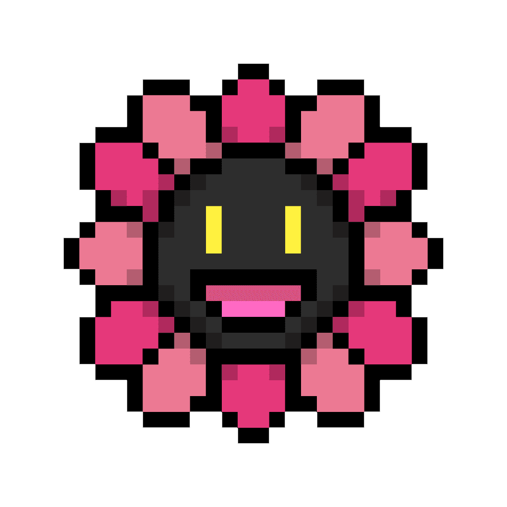 Flowers On Chain 所有的花都从花店铸造并送到各自的地址 🌺 如果业主决定在二级花店出售他们的花，你仍然可以获得它们 OCC#1 🌺 Flowers 是 4096 个以编程方式生成的链上花朵的集合，供您
Foodles Club 项目网站、社交联系方式、项目介绍内容详见：https://opensea.io/collection/foodlesclub Foodles Club (FC) 是 5000 个独特
FooDogs 项目网站、社交联系方式、项目介绍内容详见：https://opensea.io/collection/foodogs Foo Dog 是 Lucky Club 系列中 Lucky Buddha NFT 的
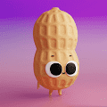 Foodz Party 项目网站、社交联系方式、项目介绍内容详见：https://opensea.io/collection/foodzparty Foodz Party 是一个生成 3D 动
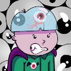 Franklin the Vampire Season 2 项目网站、社交联系方式、项目介绍内容详见：https://opensea.io/collection/franklin-the-vampir
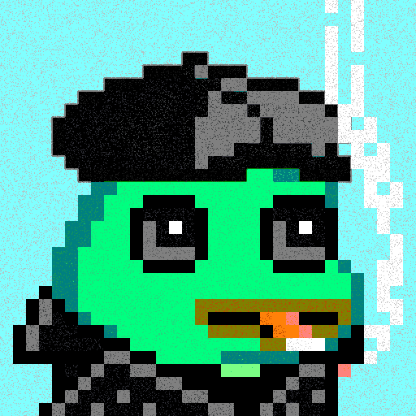 Frawgs 项目网站、社交联系方式、项目介绍内容详见：https://opensea.io/collection/frawgs FRAWGS 传奇 Frawgs 是来自一个叫 Ribbitham 的沼
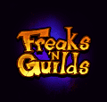 Freaks N' Guilds - Celestial Keys Freaks N' Guilds Celestial Keys 是您进入 Freaks N' Guilds 宇宙之旅的开始。4,444 个天界钥匙是从 200 多个特征中随机生成的，确保没有两个天界钥匙是相同的。 在 Freaks N' Guilds 链上游戏推出之
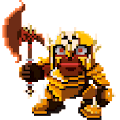 Freaks N' Guilds - Migrated （截至 2022 年 4 月 13 日，目前有 11,395 个 Stake 中的 10,451 个。占总供应量的 92.5%。这个数字会影响 Opensea 上显示的持有者数量） 截至 2022 年 4 月 13 日，已销毁 1164 个 NFT 实际供应
Free Betty 项目网站、社交联系方式、项目介绍内容详见：https://opensea.io/collection/free-betty Free Betty Collection 由 10,000 个随机生
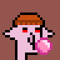 G-Punks G-Punks 是一个随机生成的 1500 像素 G，带有一个巨大的鼻子。 G-Punks NFT - 常见问题（FAQ） ▶ 什么是 G-Punks？ G-Punks 是一个 NFT（Non-fungible to
G-Star RAW 3301 Community Token G-Star RAW 3301 Community Token NFT - 常见问题（FAQ） ▶ 什么是 G-Star RAW 3301 社区代币？ G-Star RAW 3301 社区代币是一个 NFT（不可替代代币）集合。存储在区块链上的数字艺术品集合。 ▶ 有
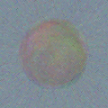 Gen Shit 我们超过了 2000 名追随者……!!我们希望继续增长，我们提供 3 GenerativeShit 对于一些幸运的人!!，Like和评论。在 48 小时内完成。 超过 25% 的薄荷里程碑，50% 即
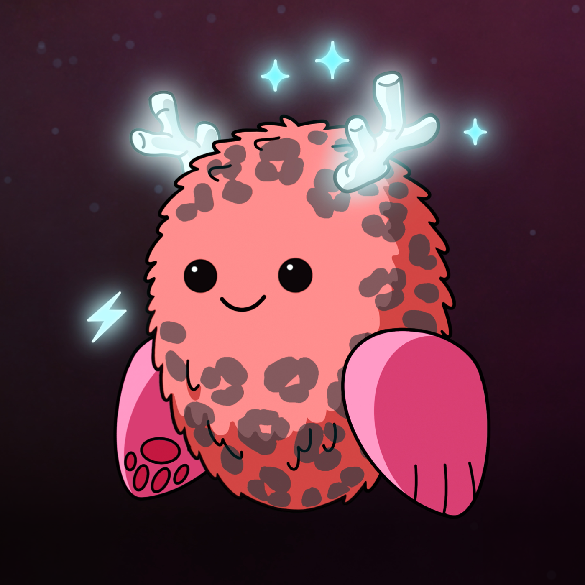 Gen-0 Mebots 一个 NFT 健身收藏品，随着您采取 IRL 的每一步而变得更加独特和有价值。今天铸造限量版 (9,999) Gen-0 Mebot。 您的 MEBOT 是您的数字孪生生物化身。您的步骤有助于探索
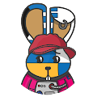 Genbit Bunnies Genbit Bunnies - 可收藏的生成 NFT 兔子。仅铸造了 7,000 枚。 每只兔子都是 1of1 单一的独特版本，由手绘零件创建，最初在Genbit Bunnies上铸造。 Genbit Bunnies 很可爱，但
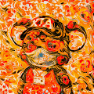 Generative Alchemy Lab (Khemical Koalas) 生成炼金术实验室是由三个朋友在元宇宙深处发现的。 通过向创作者、收藏家和流浪者开放实验室——我们希望人们能像我们在数字艺术的创作和收藏中一样找
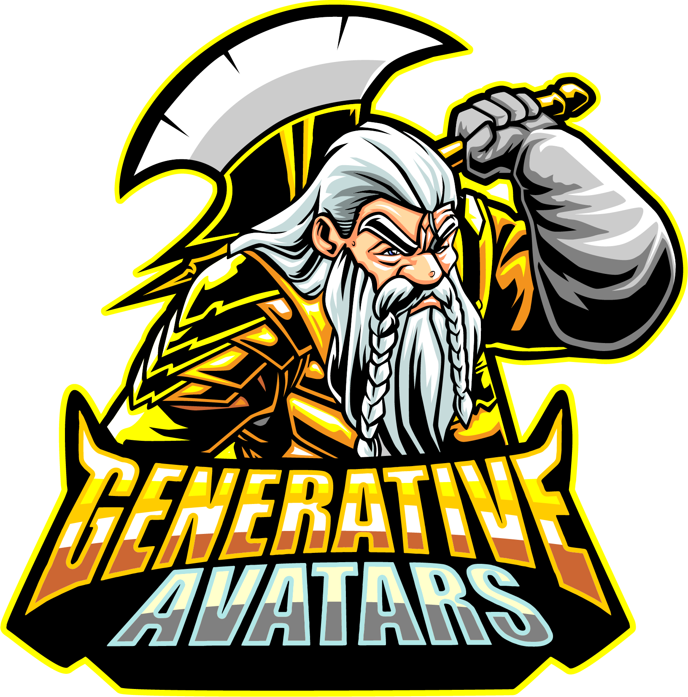 Generative Avatars by DungeonMaster 在我们的网站上玩，直接在 OpenSea 上玩，或者像传统的 NFT 一样将肖像上传到您的社交媒体资料。由你决定。立即在 OpenSea 上获取您的，并开始自定义您的地牢。或者质押
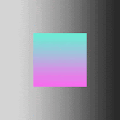 Generative Gradient Squares 生成梯度平方统计 创建于 12 个月前 976代币供应 7.5% 费用 过去 7 天没有售出生成梯度正方形。 Cryptomoron 创建的 2500 个渐变正方形的集合 生成梯度平方 NFT - 常见问题 (FAQ) ▶ 什
Generic Profile Pictures 这 2,200 张图像是 125,000 个可能变体的子集。使用的颜色和渐变是手工混合的，而组合是使用代码随机生成的。铸币厂默认是两个的倍数，每个钱包地址最多两个。没有